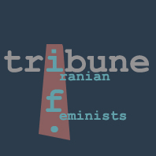

|
|
بخش اعظمی از سایت های تریبون فمینیستی ایران و مجله اینترنتی زنستان بازیابی شد
شنبه28 اسفند 1389
تغییر برای برابری - بخش اعظمی از دو وب سایت مرکز فرهنگی زنان بازبابی شد. سایت زنستان و بخش هایی از سایت ترییون فمینیستی ایران پس از فیلترینگ و حذف از فضای سایبری مجددا بازیابی شدند. هردوی این سایت ها بخشی از اسناد جنبش زنان ایران را طی سال های 1382 تا 1386 در خود جای می دهند.
مركز فرهنگي زنان به عنوان تشكلي مستقل و غير دولتي دراسفند 1379 آغاز به کار کرد، در مرداد 1380به ثبت رسيد و از سال 1385 عملا از فعالیت بازداشته شد. از آن پس فعالان آن فعالیت هایشان را در کمپین یک میلیون امضا و دیگر فعالیت های جمعی پی گرفتند. کتابخانه صدیقه دولت آبادی که مرکز فرهنگی زنان آغازگر آن بود اکنون زیر نظر نشر روشنگران اداره می شود.
تریبون فمینیستی ایران

سایت تریبون فمینیستی پس از فیلترینگ با مشکل فنی مواجه شد و سپس قابل بازیابی نبود. اما اکنون بخشی از آن به مدد همکاران فنی کمپین بازیابی شده وامید است که سایربخش های آن هم بازیابی و آرشیو شود.
سایت تریبون فمینیستی که مدت دو سال (از 1382 تا 1384)فعال بود مجموعه فعالیت ها و تلاش های مرکز فرهنگی زنان و دیگر فعالان جنبش زنان
http://www.iftribune.es/WCC.htm را طی این مدت نشان می دهد.
تریبون فمینیستی را می توانید در نشانی زیر ببینید .
http://www.iftribune.es/
زنستان
سایت زنستان که از اسفند 1384 و پس از توقف کار تریبون فمینستی، راه اندازی شد اولین مجله فمینیستی در ایران بود که تا مهر 1386 منتشر شد و سپس یک باره از صفحه اینترنت محو شد. از سوی دادسرای اتاق اینترنت وزارت ارشاد به هاست این سایت دستور داده شده بود که تمامی اسناد این سایت را از فضای سایبر حذف کنند. با تلاش همکاران فنی، زنستان نیز بازیابی شد. زنستان را در لینک زیر ببینید.
http://www.zanestan.es/